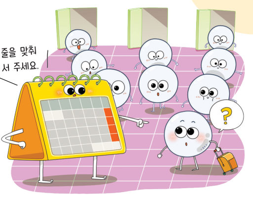
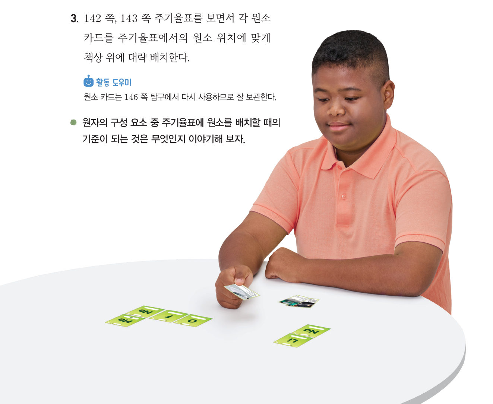
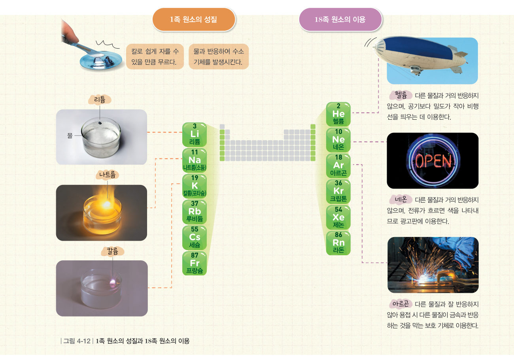

살아있는 교과서 · Ⅳ. 물질의 구성 · 1. 원소와 화합물 · 04 142~148쪽
원소를 배치한
원소를 배치한
주기율표
“줄을 맞춰 서 주세요.” 달력에 있는 날짜처럼 원소를 규칙성 있게 배치하면 어떤 점이 좋을까? 움직이는 주기율표에서 원소를 찾아보고, 원소 카드를 제자리에 배치하며 같은 족 원소의 비슷한 성질을 알아보자.
🎯 이 단원을 배우면 — 원소가 양성자 수에 따라 주기율표에 배치됨을 알고, 주기율표에서 성질이 유사한 원소를 찾을 수 있다.
교과서원소는 어떻게 분류할 수 있을까? 142~145쪽
과학자들은 원소의 성질이 규칙적으로 나타나도록 원소들을 배열하여 표로 만들었는데, 이것을 주기율표라고 한다. 원자의 양성자 수에 따라 원자마다 번호를 붙이는데, 이를 원자 번호라고 한다. 주기율표는 원소를 원자 번호 순서대로 왼쪽에서 오른쪽으로 나열하다가, 성질이 비슷한 원소가 같은 세로줄에 오도록 줄을 바꾸어 배치한 것이다.
주기율표의 가로줄은 주기라고 하고 1주기부터 7주기까지 있다. 세로줄은 족이라고 하고 1족부터 18족까지 있다.
움직이는 주기율표1주기 ~ 4주기
원소 칸을 누르면 정보가 나와요. 알루미늄(Al)은 몇 주기 몇 족일까?
원소를 눌러 보세요.
1알루미늄(Al)은 주기 족 원소이다. 주기율표에서 원소를 배치하는 기준이 되는 것은 원자의 수(원자 번호)이다.
해 보기 · 자료 수집하기주기율표에 원소 배치하기 144~145쪽

- 원소 카드 뒷면의 정보를 확인하여 앞면에 원자 번호를 적는다.
- 각 원소를 주기율표에서 찾아 이름을 적는다.
- 각 원소 카드를 주기율표에서의 위치에 맞게 배치한다.
아래 원소 카드(양성자 수가 적혀 있어요)를 누른 뒤, 빈 주기율표의 알맞은 칸을 눌러 놓아 보자.
1원자 번호는 원소에 대한 정보 중 를 기준으로 정한다.
탐구 · 탐구 결과를 해석하여 결론 도출하기같은 족 원소들의 유사성 탐구하기 146~147쪽
원소 카드 뒷면의 성질을 읽고 (가)와 (나)로 분류해 보자. 아래 가상 실험에서 물에 넣어 볼 수도 있어요.
헬륨 — 다른 물질과 거의 반응하지 않으며 공기보다 밀도가 작다. · 칼륨 — 은백색 금속, 칼로 잘리며 물과 격렬하게 반응. · 아르곤 — 다른 물질과 잘 반응하지 않는다. · 나트륨 — 은백색 금속, 무르고 물과 반응해 수소 발생. · 리튬 — 은백색 금속, 밀도가 작고 물과 반응. · 네온 — 거의 반응하지 않으며 전류가 흐르면 빛을 낸다.
1분류 기준: 물과 반응하는 금속인가(가), 다른 물질과 잘 반응하지 않는가(나)
| 헬륨 | 칼륨 | 아르곤 | 나트륨 | 리튬 | 네온 |
|---|---|---|---|---|---|
가상 실험물에 조각을 넣어 보자 (실제로는 매우 위험!)
2(가)의 원소는 주기율표에서 , (나)의 원소는 에 위치한다. 성질이 비슷한 원소는 주기율표에서 같은 에 위치한다.

다르게 해 보기 · 원소의 성질 조사하기
1족 원소들과 18족 원소들의 성질을 조사하고 공통된 성질을 정리해 보자.
🧩 첫 번째 블록 · 힌트 조각 3 (147쪽)
주기율표에서 ( ) 족에 위치한 나트륨과 염소는 성질이 서로 다르다.
스스로 확인하기142쪽 학습 목표를 달성했는지 확인해 보자 147쪽
1개념 확인 원소를 성질이 규칙적으로 나타나도록 배열한 표를 ( )(이)라고 한다.
2사고력 1족 원소인 리튬, 나트륨, 칼륨 등을 석유에 넣어 보관하는 까닭을 원소의 성질과 관련하여 설명해 보자.
5분 테스트원소를 배치한 주기율표
1원소의 성질이 규칙적으로 나타나도록 원소들을 배열한 표를 라고 한다.
✔옳으면 O, 옳지 않으면 X
| ② 주기율표에서 원소들은 원자 번호 순서대로 나열되어 있다. | |
| ③ 주기율표의 가로줄을 족, 세로줄을 주기라고 한다. | |
| ④ 주기율표는 7주기, 18족으로 구성되어 있다. |
5주기율표에서 같은 족 원소들은 이 비슷하다. 리튬, 나트륨, 칼륨은 물과 반응하여 기체를 발생시킨다. 족 원소들은 안정적이므로 다른 물질과 잘 반응하지 않는다.
8각 설명에 해당하는 18족 원소를 고르시오.
| ⑧ 전류가 흐르면 색을 나타내므로 광고판에 이용한다. | |
| ⑨ 공기보다 밀도가 작아 비행선을 띄우는 데 이용한다. | |
| ⑩ 용접 시 다른 물질이 금속과 반응하는 것을 막는 보호 기체로 이용한다. |
스스로 정리하기1. 원소와 화합물 · 첫 번째 블록 찾기 148쪽
4주기율표
⑴ 주기율표: 원소의 성질이 규칙적으로 나타나도록 원소들을 배열한 표
⑵ 원자 번호: 원자의 양성자 수에 따라 붙인 번호
⑶ 주기율표의 가로줄을 (이)라고 하고, 세로줄을 (이)라고 한다. 같은 족 원소들은 성질이 비슷하다.
⑵ 원자 번호: 원자의 양성자 수에 따라 붙인 번호
⑶ 주기율표의 가로줄을 (이)라고 하고, 세로줄을 (이)라고 한다. 같은 족 원소들은 성질이 비슷하다.
🧩 첫 번째 블록 찾기 · 이온 음료에 있는 Na와 Cl은 어떤 점이 다를까?
① Na는 나트륨, Cl은 염소의 원소 기호이다. (137쪽) ② 나트륨과 염소는 양성자 수가 달라 서로 다른 종류의 원소이다. (140쪽) ③ 주기율표에서 다른 족에 위치한 나트륨과 염소는 성질이 서로 다르다. (147쪽)
세 조각을 모아 첫 번째 블록 질문에 답해 보자. 블록 찾기 성공!
| 평가 기준 | 스스로 평가 |
|---|---|
| 지식·이해 원소와 화합물의 뜻과 원자의 구조를 설명할 수 있는가? | |
| 과정·기능 화학식을 쓰고 주기율표에서 성질이 비슷한 원소를 찾을 수 있는가? | |
| 가치·태도 원소 기호, 화학식, 주기율표를 학습하며 과학의 유용성을 느꼈는가? |
제출학생 정보 · 제출하기
모든 활동을 마친 뒤 제출하면 전체가 한 번에 채점되고 피드백이 나타나요. 답안은 선생님 스프레드시트(중2 탭)에 기록돼요.